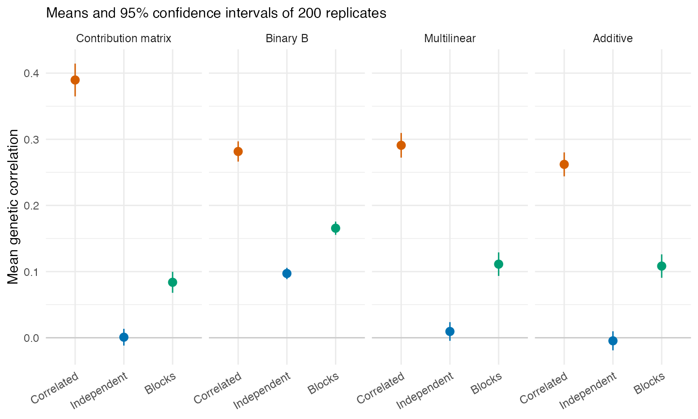
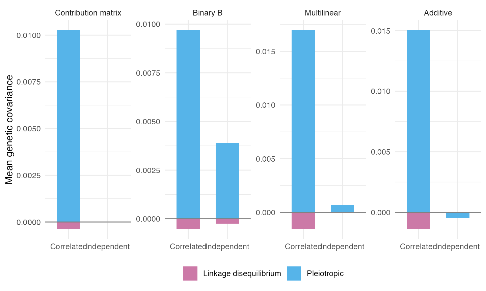
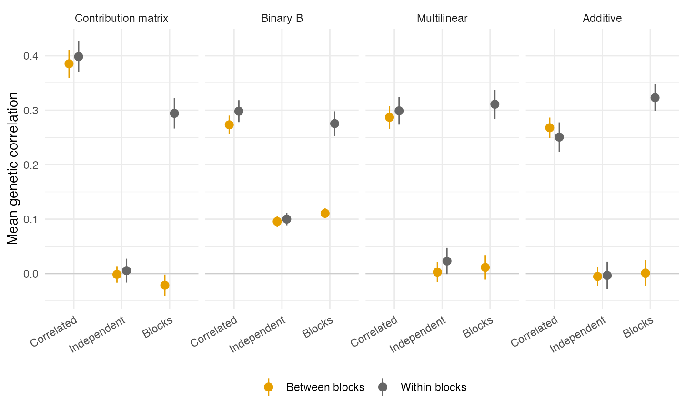
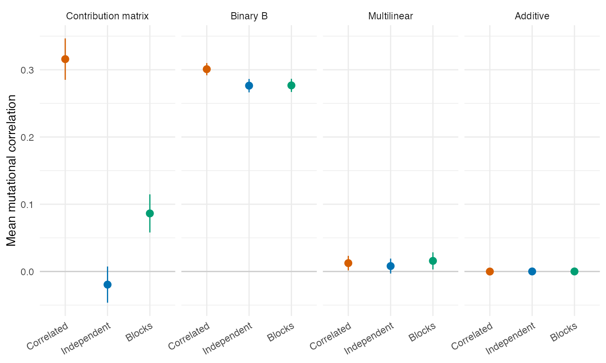
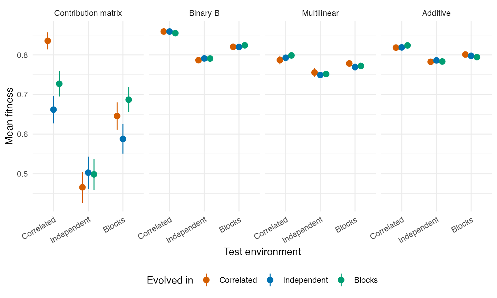

Fluctuating environments across genetic architectures
Source:vignettes/fluctuating-environments.Rmd
fluctuating-environments.Rmddo O & Whitlock (2023, Evolution Letters 7: 457-466) simulated populations whose optimum jumps every few generations, either for all traits together (correlated change) or for each trait on its own (independent change), with a genotype-phenotype map that lets pleiotropy evolve: weight genes \(a\) and a matrix of contribution genes \(C\), \(z = C a\). They concluded that
- correlated change gives more genetic covariance than independent change;
- most of the difference is pleiotropic, not linkage disequilibrium;
- block-correlated change (traits 1-2 together, 3-4 together) gives modularity;
- the mutational covariance evolves to match the environment, through the epistasis between weight and contribution genes;
- populations do best in the kind of environment they evolved in.
Their argument rests on pleiotropy being able to evolve. This vignette tests the claims with four architectures that differ in exactly that:
| Architecture | Pleiotropy | Role |
|---|---|---|
contribution_matrix() |
continuous, evolves (their model) | replication |
binary_b() |
binary, evolves (Melo & Marroig 2015) | independent test |
multilinear() |
fixed pattern; random epistasis makes mutational effects depend on the background | intermediate |
additive() |
fixed, isotropic mutational covariance | control |
The simulations run in a few hours of computing, so this vignette
shows the results of a run stored in the package. The script
fluctuating_environments.R in
system.file("examples", package = "evomod2") runs them.
Setup
The scales follow do O & Whitlock: four traits, 1000 individuals, 5000 generations; every 10 generations the optimum moves by 0.2 up or down, within \([-1, 1]\); \(\Omega = I\); no environmental noise; 0.01 mutations per individual per generation, of standard deviation 0.5 (the value used in their code, which the paper describes as a variance). The other architectures have 20 loci, like their 20 genes, and the same mutational input.
library(evomod2)
environment <- fluctuating(5000, every = 10, step = 0.2, omega = diag(4),
structure = "correlated", # or "independent", list(1:2, 3:4)
bounds = c(-1, 1))
model <- evomod_model(contribution_matrix(traits = 4),
contribution_mutation(rate_weight = 0.005 / 8,
rate_contribution = 0.005 / 32, sd = 0.5))
pop <- evolve(model, environment, n = 1000, record_every = 10)Statistics are averaged over the last 500 generations:
-
genetic covariances and correlations among traits
(
g_matrices()), within and between the blocks 1-2 and 3-4; - their pleiotropic and linkage disequilibrium parts,
by shuffling alleles among individuals
(
g_decomposition(method = "shuffle")), as do O & Whitlock did; - the mutational covariance, the covariance of the
effects of single new mutations in the evolved population
(
mutational_covariance()); - fitness in each environment: the evolved population, with pleiotropy frozen (no mutations of \(C\) or \(B\)), is moved to each kind of environment for 2000 generations with an unbounded optimum, and its mean fitness is averaged over the last 200.
1. Correlated change and genetic covariance
d <- mean_ci(res, "G_cor", c("architecture", "environment"))
ggplot(d, aes(environment, mean, colour = environment)) +
geom_hline(yintercept = 0, colour = "grey80") +
geom_pointrange(aes(ymin = lo, ymax = hi)) +
facet_wrap(~ architecture, nrow = 1) +
scale_colour_manual(values = env_colours, guide = "none") +
labs(x = NULL, y = "Mean genetic correlation",
subtitle = sprintf("Means and 95%% confidence intervals of %d replicates", n_rep)) +
theme(axis.text.x = element_text(angle = 30, hjust = 1))
Mean genetic covariance and variance, correlated and independent change:
tab <- aggregate(cbind(G_cov, G_var) ~ architecture + environment,
res[res$environment != "Blocks", ], mean)
tab[order(tab$architecture), ]
#> architecture environment G_cov G_var
#> 1 Contribution matrix Correlated 9.428883e-03 0.02568672
#> 5 Contribution matrix Independent 4.693548e-05 0.03411071
#> 2 Binary B Correlated 8.899311e-03 0.03205233
#> 6 Binary B Independent 3.610274e-03 0.03891932
#> 3 Multilinear Correlated 1.464695e-02 0.05467128
#> 7 Multilinear Independent 5.663761e-04 0.06576999
#> 4 Additive Correlated 1.340578e-02 0.05358520
#> 8 Additive Independent -4.447450e-04 0.064329432. Pleiotropy or linkage disequilibrium?
parts <- rbind(
data.frame(res[c("architecture", "environment")], part = "Pleiotropic", value = res$pleio_cov),
data.frame(res[c("architecture", "environment")], part = "Linkage disequilibrium", value = res$ld_cov))
d <- mean_ci(parts[parts$environment != "Blocks", ], "value", c("architecture", "environment", "part"))
ggplot(d, aes(environment, mean, fill = part)) +
geom_col(position = "stack", width = 0.6) +
geom_hline(yintercept = 0, colour = "grey50") +
facet_wrap(~ architecture, nrow = 1, scales = "free_y") +
scale_fill_manual(values = c("#CC79A7", "#56B4E9"), name = NULL) +
labs(x = NULL, y = "Mean genetic covariance") +
theme(legend.position = "bottom")
3. Modularity under block-correlated change
Mean genetic correlation within the blocks (traits 1-2, 3-4) and between them:
blocks <- rbind(
data.frame(res[c("architecture", "environment")], pair = "Within blocks", value = res$G_cor_within),
data.frame(res[c("architecture", "environment")], pair = "Between blocks", value = res$G_cor_between))
d <- mean_ci(blocks, "value", c("architecture", "environment", "pair"))
ggplot(d, aes(environment, mean, colour = pair)) +
geom_hline(yintercept = 0, colour = "grey80") +
geom_pointrange(aes(ymin = lo, ymax = hi), position = position_dodge(width = 0.4)) +
facet_wrap(~ architecture, nrow = 1) +
scale_colour_manual(values = c("#E69F00", "grey40"), name = NULL) +
labs(x = NULL, y = "Mean genetic correlation") +
theme(legend.position = "bottom", axis.text.x = element_text(angle = 30, hjust = 1))
4. Mutational covariance
Mean correlation between the effects of a new mutation on different traits, in the evolved populations. In the additive control the mutational covariance is fixed (isotropic), so this is zero by construction:
d <- mean_ci(res, "M_cor", c("architecture", "environment"))
ggplot(d, aes(environment, mean, colour = environment)) +
geom_hline(yintercept = 0, colour = "grey80") +
geom_pointrange(aes(ymin = lo, ymax = hi)) +
facet_wrap(~ architecture, nrow = 1) +
scale_colour_manual(values = env_colours, guide = "none") +
labs(x = NULL, y = "Mean mutational correlation") +
theme(axis.text.x = element_text(angle = 30, hjust = 1))
5. Fitness in each kind of environment
Mean fitness of populations evolved in each environment (rows) when moved to each environment (columns), with pleiotropy frozen:
fit <- do.call(rbind, lapply(c("correlated", "independent", "blocks"), function(test)
data.frame(res[c("architecture", "environment")], test = env_labels[[test]],
value = res[[paste0("fitness_", test)]])))
fit$test <- factor(fit$test, env_labels)
d <- mean_ci(fit, "value", c("architecture", "environment", "test"))
ggplot(d, aes(test, mean, colour = environment)) +
geom_pointrange(aes(ymin = lo, ymax = hi), position = position_dodge(width = 0.5)) +
facet_wrap(~ architecture, nrow = 1) +
scale_colour_manual(values = env_colours, name = "Evolved in") +
labs(x = "Test environment", y = "Mean fitness") +
theme(legend.position = "bottom", axis.text.x = element_text(angle = 30, hjust = 1))
What the architectures say
Claims 1-3 hold for every architecture, including the additive control. Correlated change raised the mean genetic correlation from 0.00 to 0.26 in the additive model, whose mutational covariance cannot evolve, and from 0.00 to 0.39 with the contribution matrix. Block-correlated change made G modular in all four (additive: 0.32 within blocks, 0.00 between). In the shuffle decomposition the difference is pleiotropic in every architecture, including the additive one. There, the pleiotropic part is not a change in how genes affect traits: selection sorts alleles, enriching those whose (randomly drawn) effects on different traits point the same way, as Jones et al. (2004) described for a fixed mutational covariance. So more covariance, modularity and a pleiotropic basis of G do not, on their own, show that pleiotropy evolved.
Claims 4 and 5 hold only for the contribution matrix. Its mutational correlation followed the environment (0.32 after correlated change, -0.02 after independent change, and 0.31 within blocks against -0.03 between them after block-correlated change), and with pleiotropy frozen, populations did best in correlated and block-correlated environments if they had evolved in them (in correlated environments, 0.84 if they evolved under correlated change against 0.66 under independent change); in independent environments, populations from all three histories had similar fitness. In the binary B model the mutational correlation stayed near 0.30 in every environment (alleles affect several traits in the same direction, whatever the environment) and populations from different environments had the same fitness. In the additive and multilinear models the mutational covariance barely changes, and there was no home advantage either.
The evolution of the mutational covariance, and the lasting advantage it gives, needs a developmental map in which the direction of pleiotropic effects can evolve continuously, as in do O & Whitlock’s model. Genetic covariance and modularity in G do not need it.
Correlated-over-independent covariance ratios (do O & Whitlock report 16-19) are not a good measure here: under independent change the mean covariance is close to zero, so the ratio is unstable. Differences in correlation are more informative.
These runs differ from do O & Whitlock’s in the life cycle: evomod2 has diploid individuals and discrete generations, their model haploid individuals and overlapping generations (one birth and one death at a time).
Running it
script=$(Rscript -e 'cat(system.file("examples", "fluctuating_environments.R", package = "evomod2"))')
Rscript $script simulate contribution_matrix correlated 1 results # one replicate
Rscript $script summarise results fluctuating_environments.rdsEach replicate takes 10-20 seconds; run them in parallel, one per process.